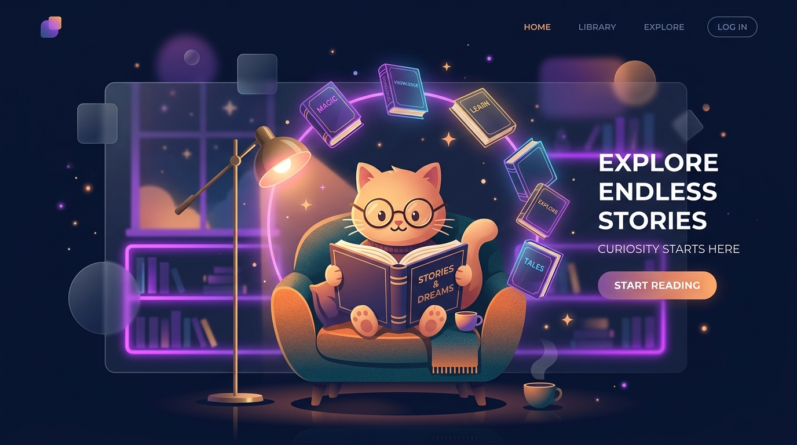

دستیار مطالعه هوشمند گربهای! 🐱📚
با میو بوک تمرکز خود را افزایش دهید، در صفحات وب حاشیهنویسی کنید و کتابخانهای شخصی و کاملاً آفلاین بسازید. همراه با تم آرامشبخش گربه برای عاشقان کتاب.
* پس از دانلود، فایل زیپ را استخراج کرده و از طریق
chrome://extensions در حالت Developer Mode بارگذاری کنید.

ویژگیهای جادویی میو بوک ✨
هایلایت آفلاین
بدون نیاز به اینترنت، متنهای مهم در هر صفحهای را مارک کنید و یادداشت بگذارید.
پومودورو کتابخوانی
تایمر تمرکز برای زمانبندی دقیق مطالعه و استراحت، تا در دنیای کتاب غرق شوید.
آمار دقیق
نمودارهای جذاب از میزان مطالعه، تعداد کتابهای خوانده شده و زمان صرف شده.
نظرات گربههای کتابخوان 😻
🐱
پیشی ملوس
⭐⭐⭐⭐⭐
"پومودوروی میو بوک با صدای خرخر گربه باعث شد روزی ۵ ساعت بدون خستگی کتاب بخونم! طراحی شیشهایش هم که حرف نداره."
🐾
پنجهطلا
⭐⭐⭐⭐⭐
"هایلایت آفلاینش دقیقاً همون چیزی بود که برای خوندن مقالات لازم داشتم. بهترین افزونهای که تا حالا نصب کردم!"